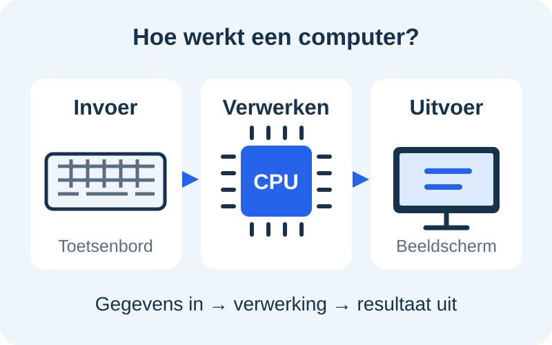

Gegevens ontvangen
Invoer is alles wat de computer binnenkrijgt. Denk aan een toets die je indrukt, geluid uit een microfoon of een foto van een camera.
Domein C · 01
Je typt, klikt of praat. De computer verwerkt die informatie en geeft een resultaat. Dat gebeurt steeds opnieuw.

Dit heet het invoer–verwerking–uitvoer-model.
Invoer is alles wat de computer binnenkrijgt. Denk aan een toets die je indrukt, geluid uit een microfoon of een foto van een camera.
De processor (CPU) voert de opdrachten van een programma uit. Hij rekent bijvoorbeeld uit waar een speler moet staan. Het werkgeheugen (RAM) bewaart gegevens die op dat moment nodig zijn.
Uitvoer is het resultaat. Je ziet iets op het scherm, hoort geluid uit de speakers of krijgt een geprint document.
Je drukt op de spatiebalk: dat is invoer. De game controleert of je personage mag springen en berekent de nieuwe positie: dat is verwerking. Je ziet het personage springen en hoort een geluid: dat is uitvoer.
Een touchscreen laat informatie zien én ontvangt je aanraking. Het is dus een invoer- en uitvoerapparaat.
Even kijken
Waarom deze video? De video van Code.org verbindt invoer en uitvoer met de processor en het geheugen. Daardoor zie je wat er tussen een klik en het resultaat gebeurt.
▶ Bekijk de video op YouTube ↗